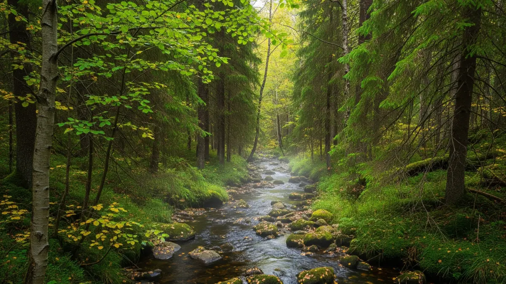

Tänk dig att stå vid kanten av en älv i gryningen, när dimman sakta lyfter och vattnet glittrar i det första solljuset. Eller att glida fram i en kanot över en stilla sjö under en varm sommareftermiddag, med luften fylld av surrande insekter och doften av barrskog. För många fiskare är säsongerna vår, sommar och höst inte bara perioder på kalendern, utan de bjuder också in till ett mer levande spel, där stigande temperaturer, strömmande vatten och skiftande ljus skapar oändliga möjligheter. Men för att verkligen lyckas kan ökad kunskap om hur fiskarna anpassar sig till dessa förändringar vara nyckeln. Låt oss ge oss ut på vattnet och upptäcka hur du kan förvandla varje tur till en oförglömlig triumf!
Hur Skiljer Sig Fiske under Vår, Sommar och Höst från Vintern?
När isen smälter och vattnet vaknar till liv förändras allt. Under vintern är fisken ofta slö och gömd i mörkret under isen, men vår, sommar och höst för med sig en explosion av energi. Temperaturerna stiger från kyliga 4–10°C i vår till upp emot 20–25°C mitt i sommaren, för att sedan sjunka igen mot hösten. Detta boostar fiskens ämnesomsättning, gör dem mer rörliga och hungrigare, men också mer selektiva i sin jakt. Till skillnad från vinterns fokus på vibrationer och lukt i mörker, blir synen en huvudaktör här – fiskarna använder sina känsliga ögon för att spåra byten i det ökande ljuset. Men det är inte bara temperaturen som spelar roll; vattenflödet, syrehalten och näringstillgången skapar unika utmaningar och chanser per säsong.
På våren, strax efter islossningen, är vattnet kallt och ofta grumligt från smältvatten och vårfloder. Fisk som öring och lax börjar sin uppströmsmigration i älvarna, drivna av lekinstinkter och ökande vattenflöden. Abborre och gädda söker sig till grunt vatten för att leka, medan röding håller sig i djupare, kallare zoner. Det är en tid av återfödelse, där fisken är extra hungrig efter vinterns fasta, men också känslig för plötsliga köldknäppar som kan bromsa aktiviteten. Som sommaren tar fart blir vattnet varmare och klarare, men alger och vegetation kan grumla sikten i vissa sjöar, vilket påverkar tillväxt och biomassa negativt. Här flyttar arter som harren till djupare vatten för att undvika överhettning, medan gädda lurar i skuggiga vikar fyllda med växtlighet. Hösten bjuder på ett sista ryck – temperaturerna sjunker, ljuset dämpas, och fisken samlar energi inför vintern. Röding och abborre rör sig närmare stränderna, och laxen gör sin höstmigration, ofta mer aggressiv i sin jakt på föda. Överallt ökar beroendet av sidolinjeorganet och luktsinnet när dagarna kortas, vilket skapar en bro mellan höstens dynamik och vinterns stillhet.
Denna säsongsvariation gör fisket till en spännande jakt på balans då varmt vatten ökar metabolismen och sanorlikheten till hugg, men extrem värme kan leda till passivitet och lägre syrehalt i ytvattnet. Positionering blir nyckeln: grunt och nära strukturer i vår och höst, djupare och syrerikare i sommar.
Optimala Väderförhållanden: När Naturen Samarbetar med Dig
Vädret är fiskarens bästa vän – eller värsta fiende. I öppet vatten påverkar det inte bara ditt humör utan direkt fiskens beteende, position och hugglust. Studier visar att optimala förhållanden ofta handlar om en balans mellan temperatur, ljus, vind och nederbörd, som alla interagerar med vattenkvaliteten i vattendragen. Låt oss bryta ner det per säsong och utforska hur du kan utnyttja vädret för att maximera dina chanser, med insikter från forskning som belyser hur fiskar som röding och lax reagerar på dessa förändringar.
Under våren är de idealiska förhållandena milda temperaturer runt 8–12°C med stigande vattenflöden från smältvatten, som stimulerar migration och födosök. En solig dag med lätt vind ökar sikten och värmer ytvattnet, vilket lockar abborre och gädda till grunt vatten för lek. Men regniga perioder kan vara magiska – de ökar syrehalten och grumlar vattnet, tvingande fisken att förlita sig mer på lukt och vibrationer, perfekt för doftande beten. Undvik kalla, vindstilla nätter som kan sänka vattentemperaturen och göra fisken passiv. Forskning på lax visar att ökande flöden i kombination med stabila temperaturer runt 10°C optimerar uppströmsrörelser, vilket gör vårstormar till prime time för älvfiske.
Sommaren kräver kyligare väder för bästa resultat. Optimala temperaturer ligger mellan 11–18°C för arter som röding, där högre värden (över 20°C) kan leda till stress och minskad aktivitet, särskilt i stillastående sjöar. Molniga dagar med lätt regn är guldlägen – de sänker ytvattentemperaturen, ökar syret och aktiverar fisken som annars gömmer sig djupt. Stark sol och vindstilla kan skapa termokliner (En termoklin är ett skikt i vatten där temperaturen ändras snabbt med djupet. Detta skikt fungerar som en barriär mellan varmare ytvatten och kallare djupare vatten) där fisk som öring och regnbåge söker sig till kallare lager – fiska då tidig morgon eller sen kväll när ljuset dämpas och aktiviteten peakar. Vind är en dubbeläggat svärd: Lätt bris blandar vattnet och lockar harr till ytan, men stormar kan grumla och skrämma bort fisken. Studier från isländska vatten visar att måttliga stormar ökar fångsten genom bättre syresättning, men extrema väder minskar tillgängligheten.
Hösten blomstrar i svala, stabila förhållanden med temperaturer runt 8–15°C, där fallande löv och kortare dagar signalerar intensivt födosök. Optimalt är molniga dagar med lågtryckssystem som närmar sig – de ökar aktiviteten hos röding och abborre, som jagar aggressivt innan vintern. Regn och vind driver näring in i vattendragen, stimulerande migration för lax och öring i älvar. Undvik höga tryck och kalla, klara dagar som kan göra fisken skygg; istället, utnyttja dimmiga morgnar för att närma dig osedd. Forskning på arktiska arter understryker att långsamma temperaturminskningar i höst förlänger den aktiva perioden, vilket ger större möjligheter för framgångsrikt fiske.
Lufttrycket är en doldis under alla säsonger: Fallande tryck (lågtryck) ökar ofta huggfrkvensen genom att stimulera födosök, medan högt tryck leder till passivitet – fiska då långsammare och djupare. Kom ihåg, vädret påverkar också din säkerhet: Starka vindar i sommar kan skapa vågor på sjöar, så planera efter prognosen för att hålla spänningen på linan, inte i båten.
Praktiska Tips: Beten, Färger och Tekniker för att Locka Drömfångsten
Att välja rätt bete är som att välja rätt danspartner – det måste matcha fiskens humör och miljö. Spinnare, wobblers, jiggar och flugor som imiterar insekter, småfisk eller kräftor. På våren, när fisken är hungrig efter lek, fungerar naturliga färger som grönt och brunt utmärkt för att smälta in i det grumliga vattnet. Lägg till en touch av rött för att trigga aggressivitet i klart vatten, där fiskens svagljussyn övergår till fullfärgsvision. När sommaren hettar till, växla till ljusa silver- eller gulnyanser i klart vatten för att reflektera solljuset och locka abborre på jakt, medan mörka svarta eller blå beten ger kontrast i algrika områden. Doft är en hemlig vapen här – tillsätt mask eller fiskolja för att aktivera luktsinnet i varmt vatten där vissa smakreceptorer reagerar på aminosyror.
Hösten kan behöva en mix: Orange och rött för att efterlikna höstlöv och stimulera aggressiv jakt hos gädda, medan silver håller sin plats för ljusreflektion i det dämpade höstljuset. Teknikmässigt: Använd snabba, ryckiga rörelser i varmt sommarvatten för att imitera flyende byten, men sakta ner i kyligare vår och höst för att matcha fiskens tempo. Trolling fungerar utmärkt i stora sjöar under sommar, medan flugfiske i strömmande älvar glänser i vår och höst för harr och öring. Tid på dygnet är avgörande – gryning och skymning erbjuder alltid de bästa chanserna, när ljuset är milt och fisken vågar sig fram från gömställen.
För specifika arter: Röding trivs med självlysande beten i djupare sommarvatten, medan abborre kan lockas av bland annat gula jiggar i vegeterade zoner. Gädda hugger på stora wobblers i vikar året om, harr föredrar (testa doftande?) flugor nära ytan, och lax samt öring svarar bäst på små, naturliga imitationer under migration. Prova att variera – en dag med rätt bete kan vända en trög tur till en saga värd att berätta runt lägerelden.
Positionering och Platsval
Att välja rätt plats är något som alla vill bemästra. I nordiska vattendrag – från stilla tjärnar till brusande älvar – styr säsong, väder och fiskens instinkter var du bör stå. Börja alltid med att observera: Använd ekolod eller kartor för att identifiera strukturer som sjunkna träd, stenar eller djuphålor, där fisken söker skydd och mat. I sjöar och tjärnar, sikta på grunt vatten (<5 m) under vår och höst, där leken och födosöket koncentrerar sig nära stränderna – perfekt för abborre och gädda som gömmer sig i vass och vikar. Sommaren driver fisken djupare (5–15 m) till syrerika zoner, som inlopp eller termokliner där kallt vatten möter varmt, idealiskt för röding som undviker ytan.
I strömmande älvar förändras allt med flödet: Vårens höga vatten lockar lax och öring till lugna hålor bakom stenar, där de sparar energi under migration. Sommaren gynnar snabba strömsträckor för harr som jagar insekter nära ytan, medan höstens lägre flöden öppnar upp djupare pooler för aggressiv jakt. Skuggiga områden under träd eller klippor är guldkorn i stark sol, där fisken flyr hettan. Rör dig strategiskt – börja vid inlopp för harr och gädda, och flytta till djupare hålor om vädret värmer upp. Kom ihåg, fiskens positionering handlar om balans: Syre, mat och skydd driver dem, så en vindpinad vik kan vara en skattkista en molnig dag.
Sammanfattning: Utnyttja Säsongerna för Bästa Fångst!
Från vårens migrerande lax i brusande älvar till sommarens djupdykande röding och höstens aggressiva abborre, erbjuder varje säsong unika äventyr. Använd ljusa färger i klart vatten, mörka i grumligt, och positionera dig efter syre och strukturer. Optimala väder som milda temperaturer, lågtryck och molniga dagar kan maximera huggen – håll koll på prognosen och låt naturen guida dig. Med dessa insikter blir ditt fiske inte bara en hobby, utan en passion som växer med varje kast.
Källor:
- Lennox, R. J., et al. (2017). What makes fish vulnerable to capture by hooks? Fisheries Research, 186, 589–604.
- Rodrigues, J. N., et al. (2023). A meta-analytical review of turbidity effects on fish mobility.
- Hara, T. J. (1994). Olfaction and gustation in fish: an overview. Fisheries Research, 20(1), 45–56.
- Carleton, K. L., et al. (2020). Seeing the rainbow: Light sensing in fish. Journal of Experimental Biology, 223(Suppl_1), jeb189258.
- Oike, H., et al. (2007). Characterization of Ligands for Fish Taste Receptors. Journal of Neuroscience, 27(21), 5584–5592.
- Jonsson, B., & Jonsson, N. (2011). Ecology of Atlantic Salmon and Brown Trout. Springer.
- Freitas, C., et al. (2016). Temperature-associated habitat selection in a cold-water marine fish. Journal of Animal Ecology.
- Thorstad, E. B., et al. (2023). Effects of storms on fisheries and aquaculture: An Icelandic case study. Arctic, Antarctic, and Alpine Research.
- Jeppesen, E., et al. (2012). Impacts of climate warming on lake fish community structure and potential effects on ecosystem function. Hydrobiologia.